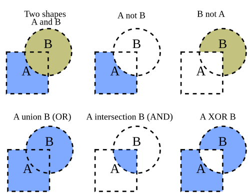

Navigation Mesh Generation
Abstract
In this project I did research for generating a navigation mesh. This requires a lot of knowledge about computational algorithms in C++, of which the biggest subject was the boolean operations on polygons.
The project
Introduction
For most game environments it's easily predictable where objects can and can't move.
With this information we can create a set of geometry to describe the walkable surface of a 3D environment, called a navigation mesh (nav mesh).
The geometry of a nav mesh is build out of a set of convex polygons, this can be triangles or quadrilaterals, the latter giving a more compact and convenient representation.
There are different approaches to the generation of navigation meshes.
- Manually creating the navigation mesh. Manually creating a navigation mesh is done by a level designer in a level editor. This mesh then gets loaded into the game and can directly be used.
- Generating the navigation mesh. In this method the raw game geometry is used to build a navigation mesh through code.
- Combination of manually creating and generating the navigation mesh.
The research process
When the algorithm is building a navigation mesh this always happens in a few steps.
- Merge the walkable polygons.
- Expand obstacles with player radius.
- Subtract obstacles from walkable polygons.
- Triangulate the result polygon.
- Boolean operations on polygons
- Expansion of polygons
- Triangulation of polygons
Results
Expanding of polygons
When we want to subtract the obstacles of a level from the generation map, we need to take into acount the player radius because we do not want the player to be able to go half into these obstacles. For this we need an algortihm to expand the obstacle polygons. For this there were 2 methods I could think of. One only is applicable to orthogonal polygons and the other is an extension of the first one so that this can include non-orthogonal polygons. As a result at the left, we have our first solution executed on a non orthogonal polygon. In the middle; the second solution. And at the right, both displayed on top of each other to have a good view for comparison. For more details about how this is implemented, I kindly refer to my article, downloadable at the bottom of this page.

Merging of polygons
To be able to merge polygons, there needs to be a way to find the intersections of 2 polygons. This is done by the sweep algorihtm.
In this algorithm we go from left to right and find all intersections with edges from other polygons.
Then depending on the boolean operations, vertices get selected to be part of the result polygon.

AND operation
For the and operation we want to select the vertices that are part of the most outer circumference.
This means vertices that are lying inside another polygon are deselected.
MINUS oepration
For the minus operation we want to select the vertices that are of the base polygon that are not in the other polygon and the vertices of the other polygon that are in the base polygon.
After this we will construct the remaining polygon.
Triangulation of polygons
For a navigation mesh it is essential that we can navigate around the walkable polygon, the easiest way to do is creating points on which we can implement pathfinding. But to be able to do this, we need to split up our polygon so that we can define points for the path finding algorithm, this is done by triangulation.
Resources
- J. O’Rourke, Computational Geometry in C, 2nd ed. 2021, isbn: 9780511804120
- “Intersection point of lines.” (), [Online]. Available: https://cp-algorithms.com/geometry/ lines-intersection.html.
- J. O'Rourke, Art Gallery Theorems and Aglorithms, 1987, isbn: 0-19-503965-3
- F. Martínez, C. Ogayar, J. R. Jiménez, and A. J. Rueda, “A simple algorithm for boolean operations on polygons,” Advances in Engineering Software, vol. 64, pp. 11–19, Oct. 2013, issn: 0965-9978. doi: 10.1016/J.ADVENGSOFT.2013.04.004
- Own mathematical knowledge used for solution based thinking.
Links
To read and see more details about what I learned in this project I kindly refer to my written article and the accompanied code base about this topic .